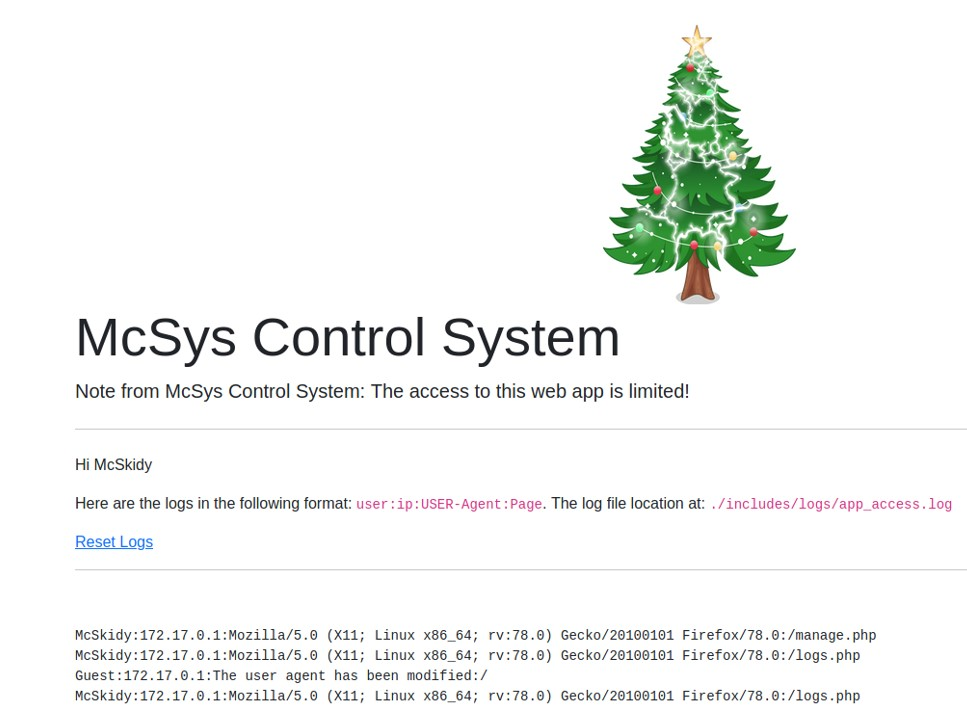
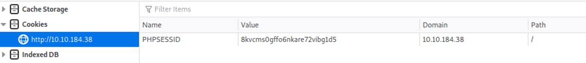

Tools & technique
A Local File Inclusion (LFI) is a way to access to some local file from the web server that the user is not supposed to have accessed. Enumerating the local files of the web server can reveal some confidential documents or information. Similar as every attack, the attacker must find the vulnerability before exploiting it. It is necessary to look for an entry point. A LFI entry point can be a GET or a POST parameter that pass an argument or data to the web application. The GET request is usually found in the URL, that makes it easy to find. Then, the attacker can request any file from the web server. If the file is not found, then an error 404 will be shown, if the attacker doesn't have the rights to view the file, then another error code will appear to indicate it is forbidden.
Find the vulnerability
An entry point can be a GET or POST request.
example : http://webtest.xyz/file.php?file=password.txt
In the example above, there is GET request that pass a file as a argument and will send it to the web server. The
file parameter has "password.txt" as value. Therefore, when the webserver has received this request, it might try to find that file and show the content of that file. Obviously it depends on the script behind file.php.
In a PHP file, we can use PHP filter wrapper to extract more data in the web application.
Php://filter/resource=/etc/passwd
/etc/passwd is a file on Linux that is readable for any user. This file does not show the password in clear, the password inside of that file is encrypted. If the user managed to get access to the file, or display the content of the file, the web server is potentially vulnerable to LFI attack.
Exploit the vulnerability
There is a limit when using the PHP wrapper technique is we cannot include any .php file in the resource because the php code will be executed and won't display the content of the file. To solve this problem, encoding it with base64 can be a solution.
Php://filter/convert.base64-encode/resource=file.php
The content of the file "file.php" will be encoded in base64 and displayed on the web page. Then, we just have to decode the base64 to retrieve the content of the file.
Local File Inclusion to Remote Code Execution via log files
Playing around with a web application, we can find out how to access to the logs (access logs for example).
In the example above, the logs store the user name, the IP address, the user-agent and the page that the user has accessed.
Among those data that are stored in the logs, the user-agent is the one that is modifiable, controllable by any user.
Curl is a great tool to make HTTP request to a web application. Let's look at the curl command.
curl --help
The parameter -A send a user-agent to the server, which means that any user can control the value of the "user-agent".
curl -A "The user agent has been modified" http://10.10.197.112/

As shown in the screenshot above, the user-agent has been modified with a value controlled by the user. We know that using PHP wrapper, we can load any php code in the web application, therefore if we modified the user agent with PHP code, we will execute it when using the PHP wrapper.
curl -A "" http://10.10.197.12
The function phpinfo() will display the web server configuration.
Guest:172.17.0.1::/ does not have any user agent. If we use a PHP wrapper to access to this page, the PHP code will be executed. On the log page, we also get the information where the log file is located on the server "./include/logs/app_access.log".
When we access to the page with the PHP wrapper, we see the web server configuration on the page.
php://filter/resource=./include/logs/app_access.log
If we have executed successfully some php code on the web server, then we successfully made a remote code execution (RCE). It is also called
log poisoning.
Local File Inclusion to Remote Code Execution via PHP session
PHP sessions are files that store temporary information. When the user logs out of the web application, the PHP session information is deleted. Command location where the session file is located on the server:
- C:\Windows\Temp
- /tmp/
- /var/lib/php5
- /var/lib/php/session
PHP session file store the value of the username into a the session file.
To find the PHP session file name, by default it uses a naming convention "sess_<SESSION_ID>". The SESSION_ID can be found by looking at the cookies.

In the example above, the cookie value is 8kvcms0gffo6nkare72vibg1d5, therefore the session information will be located in the following file: /tmp/sess_8kvcms0gffo6nkare72vibg1d5.
Since we know that the file will log the username, let's try to put some PHP code on the username tab.
Since that the session file store the value of the username, it will store some PHP code on it. Let's access the file with a PHP wrapper so that it will execute the PHP code.
http://10.10.184.38/index.php?err=php://filter/resource=/tmp/sess_8kvcms0gffo6nkare72vibg1d5
And boom, remote code execution. Our PHP code "phpinfo()" execute it in the session file.